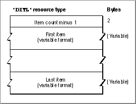
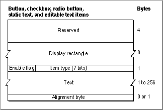
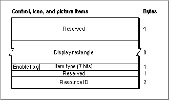
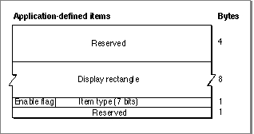
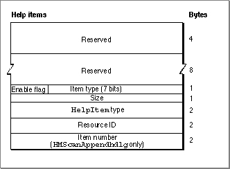

The Item List Resource
You use an item list resource to specify items--such as buttons and text--in alert boxes and dialog boxes. An item list resource is a resource with the resource type'DITL'. All item list resources must be marked purgeable, and they must have resource ID numbers greater than 128.For an alert box, you specify the resource ID of the item list resource in an alert
resource (described beginning on page 6-142). For a dialog box that you create with
theGetNewDialog function, you specify the resource ID of the item list resource in a dialog resource (described beginning on page 6-141). For a dialog box that you create with either the NewColorDialog function (described on page 6-108) or the NewDialog function (described on page 6-111),you use the Resource Manager functionGetResource to read the item list resource into memory and to provide a handle to
the item list resource in memory.The format of a Rez input file for an item list resource differs from its compiled output format. This section describes the structure of a Rez-compiled item list resource. If you are concerned only with creating an item list resource, see "Providing Items for Alert and Dialog Boxes" beginning on page 6-26.
Figure 6-44 shows the format of a compiled item list resource.
Figure 6-44 Structure of a compiled item list (
'DITL') resource
The compiled version of an item list resource contains the following elements:
The format of each item depends on its type. Figure 6-45 shows the format of an item defined to be a button, a checkbox, a radio button, a static text item, or an editable
- Item count minus 1. This value is 1 less than the total number of items defined in
this resource.- A variable number of items.
text item.The compiled version of a button, checkbox, radio button, static text item, or editable text item consists of the following elements:
Figure 6-45 Structure of compiled button, checkbox, radio button, static text, and editable
- Reserved. The Dialog Manager uses the element for storage.
- Display rectangle. This determines the size and location of the item in the alert box or dialog box. The display rectangle is specified in coordinates local to the alert box
or dialog box; these coordinates specify the upper-left and lower-right corners of
the item.
text items
Figure 6-46 shows the format for an element defined to be a control, an icon, or a
- Enable flag. This specifies whether the item is enabled or disabled. If this bit is set,
the item is enabled and the Dialog Manager reports to your application whenever mouse-down events occur inside this item.- Item type.
- If this bit string is set to 4 (as specified in the Rez input file by the
Button constant), then the item is a button.- If this bit string is set to 5 (as specified in the Rez input file by the
CheckBox constant), then the item is a checkbox.- If this bit string is set to 6 (as specified in the Rez input file by the
RadioButton constant), then the item is a radio button.- If this bit string is set to 8 (as specified in the Rez input file by the
StaticText constant), then the item is static text.- If this bit string is set to 16 (as specified in the Rez input file by the
EditText constant), then the item is editable text.- Text. This specifies the text that appears in the item. This element consists of a length byte and as many as 255 additional bytes for the text. ("Titles for Buttons, Checkboxes, and Radio Buttons" beginning on page 6-37 and "Text Strings for Static Text and Editable Text Items" beginning on page 6-40 contain recommendations about appro- priate text in items.)
- For a button, checkbox, or radio button, this is the title for that control.
- For a static text item, this is the text of the item.
- For an editable text item, this can be an empty string (in which case the editable text item contains no text), or it can be a string that appears as the default string in the editable text item.
- Alignment byte. This is added if necessary to make the previous text string end on a word boundary.
picture item.Figure 6-46 Structure of compiled control, icon, and picture items

The compiled version of a control, an icon, or a picture item consists of the following elements:
Figure 6-47 shows the format for an application-defined item.
- Reserved. The Dialog Manager uses the element for storage.
- Display rectangle. This determines the size and location of the item in the alert box
or dialog box. The display rectangle is specified in coordinates local to the alert or dialog box.- Enable flag. This specifies whether the item is enabled or disabled. If this bit is set, the item is enabled and the Dialog Manager reports to your application whenever mouse-down events occur inside this item.
- Item type.
- If this 7-bit string is set to 7 (as specified in the Rez input file by the
Control constant), then the item is a button.- If this is set to 32 (as specified in the Rez input file by the
Icon constant), then the item is an icon.- If this is set to 64 (as specified in the Rez input file by the
Picture constant), then the item is a QuickDraw picture.- Resource ID.
- For a control item, this is the resource ID of a
'CTRL' resource.- For an icon item, this is the resource ID of an
'ICON' resource and, optionally, a 'cicn' resource- For a picture item, this is the resource ID of a
'PICT' resource.Figure 6-47 Structure of a compiled application-defined item

The compiled version of an application-defined item consists of the following elements:
Figure 6-48 shows the format for a help item. (Help items are described in detail in the chapter "Help Manager" of Inside Macintosh: More Macintosh Toolbox.)
- Reserved. The Dialog Manager uses the element for storage.
- Display rectangle. This determines the size and location of the application-defined item in the alert box or dialog box. The display rectangle is specified in coordinates local to the alert box or dialog box.
- Enable flag. This specifies whether the application-defined item is enabled or disabled. If this bit is set, the item is enabled and the Dialog Manager reports to
your application whenever mouse-down events occur inside this item.- Item type. This is set to a value of 0 (as specified in the Rez input file by the
UserItem constant).Figure 6-48 Structure of compiled help items

The compiled version of a help item consists of the following elements:
- Reserved. The Dialog Manager uses the element for storage.
- Reserved. This should be set to 0.
- Enable flag. This specifies whether the item is enabled or disabled. For help items, this bit should never be set, because the Dialog Manager cannot report to your application when mouse-down events occur inside the item.
- Item type. This is set to 1 (as specified in the Rez input file by the
HelpItem constant).- Size. This specifies the number of bytes contained in the rest of this element. This is set to 4 for an item identified by either the
HMScanhdlg or HMScanhrct identifier, or it's set to 6 for an item identified by the HMScanAppendhdlg identifier.HelpItemtype. This specifies the type of help item defined in the resource.
- For an item identified by the
HMScanhdlg identifier, this element contains the value 1.- For an item identified by the
HMScanhrct identifier, this element contains the value 2.- For an item identified by the
HMScanAppendhdlg identifier, this element contains the value 8.- Resource ID. This is the resource ID of the resource containing the help messages for this alert box or dialog box.
- For an item identified by either the
HMScanhdlg or HMScanAppendhdlg identifier, this is the ID of an 'hdlg' resource.- For an item identified by the
HMScanhrct identifier, this is the ID of an
'hrct' resource.- Item number. This is available only for an item identified by the
HMScanAppendhdlg identifier. This is the item number within the alert box or dialog box after which the help messages specified in the'hdlg' resource should be displayed. These help messages relate to the items that are appended to the alert box or dialog box.(The item list resource does not contain these 2 bytes for items identified by either theHMScanhdlg or HMScanhrct identifier.)